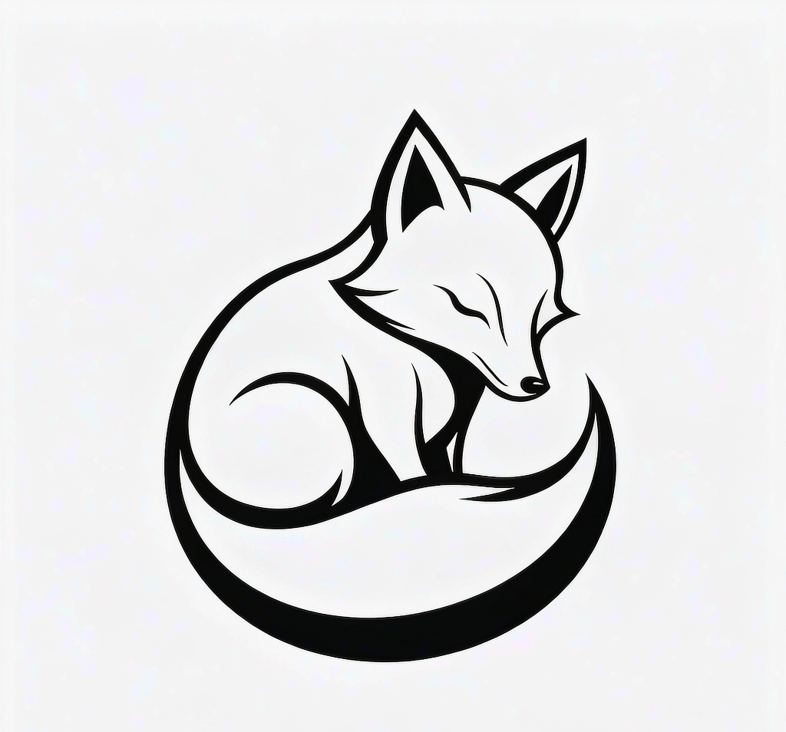

留白
不联系的第 1 天
1
天
不联系 · 安住今天
始于今天

小白 · 守护者
…
今 天 ， 我 没 有 联 系
没忍住，联系了 →
戒断刻度
留白瓶
还没有存下的话
找小白聊聊
难过、想ta、睡不着
小白
一直都在
1
留白中
已坚持 1 天
小白的性格
戒断
戒断开始日
计数从这天起
ta 的代号
只存在你的手机里
你的数据
导出数据
下载为 JSON 备份
导出
清空所有数据
不可恢复
清空
留白 · Whitespace · v0.1
今天
小白
影子
我
今天的影子时间结束了
深呼吸。刚才和你说话的，是根据聊天记录生成的 AI 影子——
不是真的 ta
。
跟着圆的节奏
吸气 · 呼气
把刚才的感受，说给小白听
先静一静